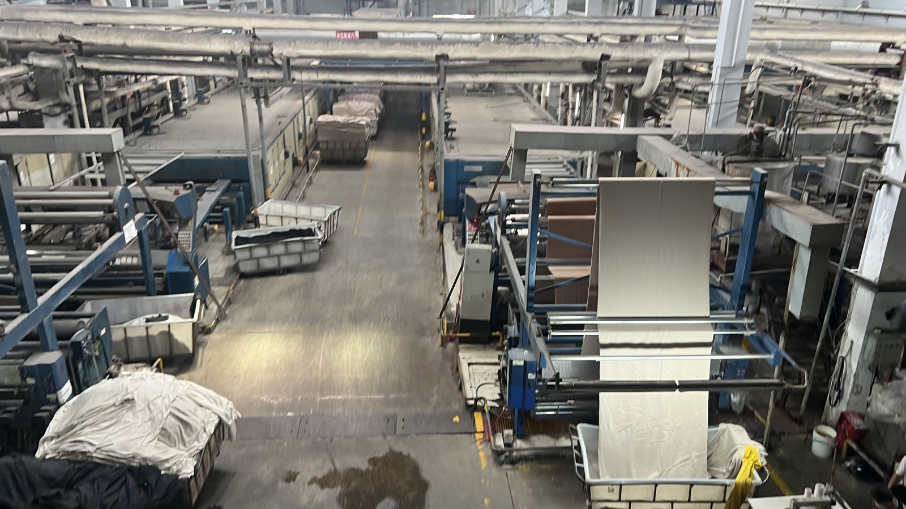

Taotao business-visit photo for textile-production context. It does not verify a particular garment, supplier, test or order.
A U.S. private-label apparel buyer has a wash result for the main fabric. The supplier asks to print the care label and finish a garment that also contains lining, trim and a decorative component. The purchase decision is whether the finished garment supports the proposed instructions. A fabric-only result may leave the assembled product unanswered.
Why this decision matters
The U.S. Federal Trade Commission's Care Labeling Rule covers manufacturers and importers of textile wearing apparel and certain piece goods. It requires a reasonable basis for care instructions and warnings. The FTC's business guide explains that component evidence can help, but a garment with multiple components still needs reliable evidence that the garment as a whole will not be harmed by the recommended care. The applicable rule and care method must be checked for the exact finished product and destination market.
Taotao's finished-garment care-label map
| Request | Match it to | Question before printing |
|---|---|---|
| Final bill of materials, including shell fabric, lining, thread, print and trims | Approved pre-production garment and current supplier specification | What will actually be sewn into the shipment? |
| Wash or cleaning evidence with sample identity, method and date | The assembled garment or a justified representative configuration | Does the evidence address the whole garment and proposed care? |
| Care-label artwork with version and attachment position | Tested configuration and U.S. compliance review | Does the printed instruction match the supported method? |
| Change log for fabric, print, trim and finishing process | Approved sample and test scope | Has a material change made the old result less useful? |
How to verify it
Put one finished sample on the table beside the bill of materials and the proposed label. Identify the sample and every relevant component in the care evidence. If a report covers only the shell fabric, ask how the supplier evaluated color transfer, shrinkage, print durability and trim behavior in the assembled garment under the exact instruction. If the product or care method warrants further testing, agree the sample selection and method with a qualified laboratory before label printing. Keep the final artwork version tied to the purchase order.
Red flags and limitations
Pause when the report has no sample identifier, the tested material differs from bulk production, the care wording is broader than the tested procedure, or a trim was changed after approval. A passed fabric test does not automatically validate a sewn garment. A factory visit can help inspect records and the production configuration; it does not replace product testing or the importer's compliance responsibility.
Continue / Pause / Escalate
- Continue when the finished configuration, representative evidence and final label version reconcile, and the buyer's compliance review is complete.
- Pause when a component or report scope is missing, or label artwork has changed after testing.
- Escalate contradictory results or uncertain U.S. care-label wording to a qualified laboratory or compliance specialist before printing.
See Taotao's apparel sourcing range. One next step: send a redacted garment specification and proposed care label for a document-gap review. Remove customer names, private prices and sensitive details first.